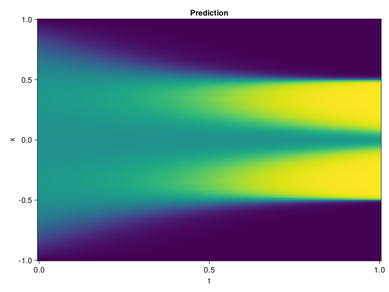

Allen-Cahn Equation with Sequential Training
In this tutorial we are going to solve the Allen-Cahn equation with periodic boundary condition from $t=0$ to $t=1$. The traning process is split into four stages, namely $t\in [0,0.25]$, $t\in [0.0,0.5]$, $t\in [0.0,0.75]$ and $t\in [0.0, 1.0]$.
using ModelingToolkit, IntervalSets
using Sophon
using Optimization, OptimizationOptimJL
@parameters t, x
@variables u(..)
Dₓ = Differential(x)
Dₓ² = Differential(x)^2
Dₜ = Differential(t)
eq = Dₜ(u(x, t)) - 0.0001 * Dₓ²(u(x, t)) + 5 * u(x,t) * (abs2(u(x,t)) - 1.0) ~ 0.0
domain = [x ∈ -1.0..1.0, t ∈ 0.0..0.25]
bcs = [u(x,0) ~ x^2 * cospi(x),
u(-1,t) ~ u(1,t)]
@named allen = PDESystem(eq, bcs, domain, [x, t], [u(x, t)])\[ \begin{align} - 0.0001 \frac{\mathrm{d}}{\mathrm{d}x} \frac{\mathrm{d}}{\mathrm{d}x} u\left( x, t \right) + 5 \left( -1 + \left|u\left( x, t \right)\right|^{2} \right) u\left( x, t \right) + \frac{\mathrm{d}}{\mathrm{d}t} u\left( x, t \right) =& 0 \end{align} \]
Then we define the neural net, the sampler, and the training strategy.
chain = FullyConnected(2, 1, tanh; hidden_dims=16, num_layers=4)
pinn = PINN(chain)
sampler = QuasiRandomSampler(500, (300, 100))
strategy = NonAdaptiveTraining(1, (50, 1))
prob = Sophon.discretize(allen, pinn, sampler, strategy)OptimizationProblem. In-place: true
u0: ComponentVector{Float64}(layer_1 = (weight = [-0.617529571056366 -1.6786468029022217; -1.3266630172729492 -1.893762469291687; … ; 1.5637389421463013 0.7278622388839722; 0.947574257850647 -0.849593460559845], bias = [0.0; 0.0; … ; 0.0; 0.0;;]), layer_2 = (weight = [0.15598639845848083 0.5161681771278381 … -0.14323724806308746 -0.45382389426231384; -0.32172080874443054 0.6588575839996338 … 0.24095208942890167 -0.10408473759889603; … ; -0.622944176197052 0.3849099278450012 … -0.5731374025344849 -0.379543274641037; -0.30110687017440796 0.024648308753967285 … 0.26862218976020813 -0.1369413435459137], bias = [0.0; 0.0; … ; 0.0; 0.0;;]), layer_3 = (weight = [-0.13441631197929382 0.4210367202758789 … -0.05811299383640289 -0.35572120547294617; 0.09016193449497223 -0.4822322130203247 … 0.4293164312839508 0.08284268528223038; … ; 0.6612952351570129 -0.6547858119010925 … 0.7175732254981995 -0.27486705780029297; 0.5359179973602295 -0.2558880150318146 … 0.6627323031425476 0.048475269228219986], bias = [0.0; 0.0; … ; 0.0; 0.0;;]), layer_4 = (weight = [0.5503244996070862 -0.4805770516395569 … 0.7135599255561829 -0.11564122885465622; 0.19771650433540344 -0.13605168461799622 … -0.08469977229833603 0.23264752328395844; … ; -0.6609155535697937 0.4433324635028839 … 0.5098543763160706 0.3039793074131012; -0.3875753879547119 0.644006609916687 … 0.5655753016471863 -0.1481592208147049], bias = [0.0; 0.0; … ; 0.0; 0.0;;]), layer_5 = (weight = [0.6946035623550415 0.01732493005692959 … -0.06267543882131577 0.48387610912323], bias = [0.0;;]))We solve the equation sequentially in time.
function train(allen, prob, sampler, strategy)
bfgs = BFGS()
res = Optimization.solve(prob, bfgs; maxiters=2000)
for tmax in [0.5, 0.75, 1.0]
allen.domain[2] = t ∈ 0.0..tmax
data = Sophon.sample(allen, sampler)
prob = remake(prob; u0=res.u, p=data)
res = Optimization.solve(prob, bfgs; maxiters=2000)
end
return res
end
res = train(allen, prob, sampler, strategy)u: ComponentVector{Float64}(layer_1 = (weight = [-0.299464738251923 -1.2591756817983617; -0.489507968578386 -1.8384050972508805; … ; 1.5483867836022474 0.897403023833622; 0.7065127647475661 -0.5633077880839814], bias = [1.2372695294089266; -1.3727337040187193; … ; 0.03847094852346707; 0.7994533773937105;;]), layer_2 = (weight = [0.022566533698336232 0.5714008883430388 … -0.020759592561096524 -0.43358795566682173; -0.09867207948825553 1.2539165844056415 … 0.44993996853808527 0.018451799425838796; … ; -1.3435177336018749 0.46203645541594307 … -0.5655931063135544 -0.4177872356388401; -0.9004842559662851 0.1693342916172333 … 0.1766156351209943 -0.05019486405252209], bias = [0.24331121082115284; -0.4019640473846246; … ; -0.15623291939645156; -0.3058901804284993;;]), layer_3 = (weight = [-0.2579869163487115 0.11845302044391119 … -0.3898196138674063 -0.06279522107445218; 0.23338402502364977 -0.33189150487485364 … 1.0426761020543283 1.5330738662679213; … ; 0.695895839729119 -0.41251863254323234 … 0.6874974771670499 -0.3359252947704033; 0.4514259241214325 -0.07953136533708574 … 1.0337231380475826 0.34815628752774763], bias = [0.4220557518056654; -0.14645931919601066; … ; -0.2467789280383593; -0.21724119666704167;;]), layer_4 = (weight = [0.1855836250660977 -0.47607358480109757 … 0.6663927365271812 -0.08315660416561517; 0.15997316380709498 0.483308353249879 … -0.14091966047359106 0.47960098497994447; … ; -0.511063699062649 0.5232313020423367 … 1.193501158498366 0.06978095882725302; -0.599618896016041 0.585794700060458 … 0.6165251869027543 -0.5285012201710549], bias = [0.002793979947721254; -0.06098072223696241; … ; -0.3429601337148576; -0.13178882098768394;;]), layer_5 = (weight = [0.06678634732409627 -0.042298016109833435 … 0.4083284767362665 0.22994458250403899], bias = [-0.2992624102692607;;]))Let's plot the result.
using CairoMakie
phi = pinn.phi
xs, ts = [infimum(d.domain):0.01:supremum(d.domain) for d in allen.domain]
axis = (xlabel="t", ylabel="x", title="Prediction")
u_pred = [sum(pinn.phi([x, t], res.u)) for x in xs, t in ts]
fig, ax, hm = heatmap(ts, xs, u_pred', axis=axis)